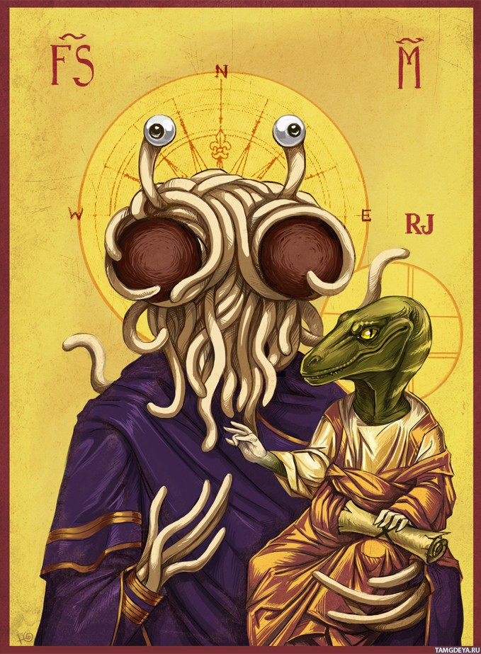
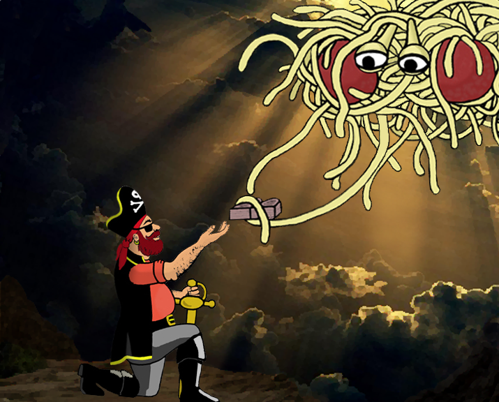

Центральным в пастафарианской теории создания мира является то, что Летающий Макаронный Монстр создал Вселенную «после сильного алкогольного опьянения». В соответствии с этими убеждениями причиной порочности Земли стало опьянение Монстра. Кроме того, согласно пастафарианству, все доказательства эволюции были намерено подстроены Летающим Макаронным Монстром, чтобы проверить веру пастафариан.
Когда учёный проводит радиоуглеродный анализ, Летающий Макаронный Монстр «изменяет результаты измерений своей Макаронной Десницей».
Согласно пастафарианской системе верований, пираты — «абсолютно божественные создания» и первые пастафариане. По мнению пастафариан, представление пиратов в качестве «воров и изгоев» — дезинформация, распространённая христианскими теологами в Средние Века и кришнаитами.
Пастафариане верят, что пираты были «миролюбивыми исследователями и распространителями доброй воли», раздававшими конфеты маленьким детям, добавляя, что современные пираты ни в коей мере не похожи на «весёлых пиратов прошлого». Кроме того, пастафариане верят, что за загадочные крушения и исчезновения кораблей и самолётов в Бермудском треугольнике несут ответственность призраки пиратов. 19 сентября пастафариане отмечают Международный пиратский день.
Глобальное потепление, землетрясения, ураганы и другие стихийные бедствия являются прямым следствием сокращения числа пиратов с XIX века.